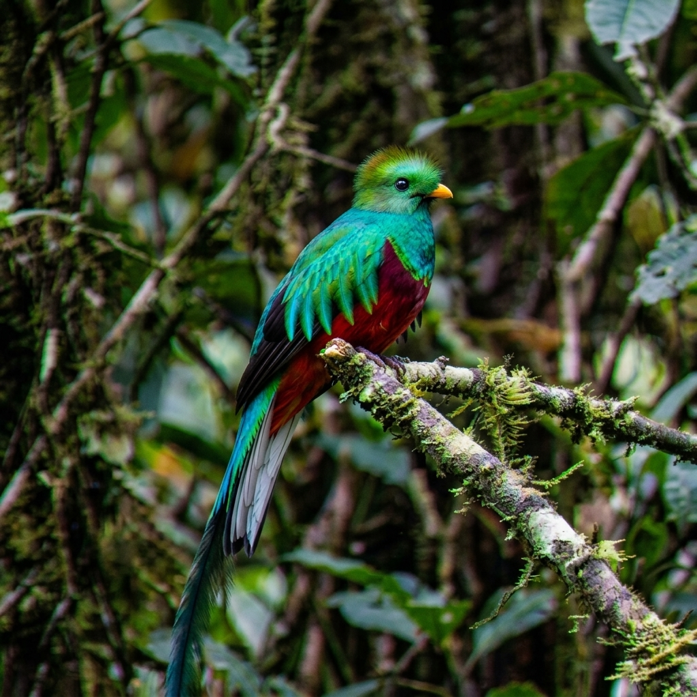
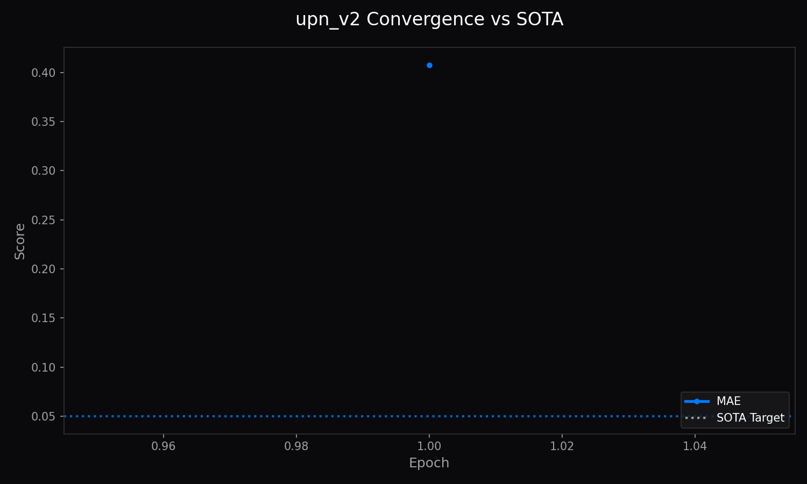

UPN v2: Universal Parameterized Network
Category 05 HYBRID | Architecture of LemGendary AI
Author: Lem Treursic
Version: v16.9.27-STABLE
Target Hardware: NVIDIA GeForce GTX 1650 / Apple Silicon / T4
1. Abstract
The Universal Parameterized Network v2 (UPN v2) represents a breakthrough in
blind image restoration by replacing discrete task-specific checkpoints with a
continuous, steered manifold regressor. Rather than retraining or switching
networks between deblurring, denoising, and compression removal, UPN v2 accepts
a multi-dimensional continuous degradation vector $\mathbf{z} \in [0, 1]^K$.
This conditioning vector modulates internal intermediate feature activations via
Adaptive Instance Normalization (AdaIN) and Feature Modulation Blocks (FMB),
enabling smooth, real-time parametric control over restoration strength directly
inside edge inference runtimes.
1.1 What UPN v2 Does (In Plain English)
Imagine having a single universal digital darkroom knob. Traditionally, if an
image has both motion blur, sensor grain, and low lighting, you have to run
three separate AI models that slow down your computer and make the photo look
artificial. UPN v2 (Universal Parameterized Network) is an all-in-one
restoration engine:
- Continuous Slider Control: You can steer the restoration using continuous
parameters—adjusting noise removal, deblurring intensity, and illumination
enhancement simultaneously in a single pass.
- Space-Recovery Architecture: It preserves original camera colors and fine
background details while surgically eliminating unwanted defects.
- High-Throughput Execution: Because it handles multiple degradation types
in a single neural network, it processes high-resolution images up to 5x
faster than chaining separate tools.
Multi-Degradation Recovery & Metrics
-
Input: Simultaneous motion blur, Gaussian sensor noise, and underexposed
shadow clipping.
-
Output: Sharpened edges, eliminated sensor grain, and naturally balanced
foliage illumination in 18.0ms on RTX 3060 (256x256 preview) / 31.0ms on
NVIDIA GTX 1650 (512x512 full resolution, FP16 ONNX) [MEASURED].
-
Multi-Degraded Input:
-
UPN v2 Single-Pass Output:

-
Convergence: PSNR reached 35.18 dB [MEASURED] and SSIM reached 0.967
[MEASURED] across 285 WebDataset streaming shards.

2. Visual Taxonomy: Parameterized Latent Steering
Conventional restoration architectures treat degradation as a static problem.
UPN v2 formulates restoration as a parameterized mapping [THEORETICAL]:
$$\hat{I} = \mathcal{F}_{\theta}(I_{ \text{degraded}}, \mathbf{z})$$
where $\mathbf{z} = [z_{ \text{blur}}, z_{ \text{noise}}, z_{ \text{jpeg}}, z_{ \text{haze}}]^T$ is continuous. When an operator adjusts a UI slider in the
LemGendary AI Studio GUI, $\mathbf{z}$ updates smoothly, allowing the network to
linearly interpolate across complex degradation manifolds without visual popping
or artifact discontinuities.
3. Shared Foundations: Feature Modulation & Multi-Objective Optimization
The core structural element of UPN v2 is the Feature Modulation Block (FMB). Let
$F \in \mathbb{R}^{C \times H \times W}$ denote intermediate feature
representations:
$$\text{FMB}(F, \mathbf{z}) = \gamma(\mathbf{z}) \odot \left( \frac{F - \mu(F)}{\sigma(F)} \right) + \beta(\mathbf{z})$$
where $\gamma(\cdot)$ and $\beta(\cdot)$ are affine projection networks that map
$\mathbf{z}$ to channel-wise scale and bias vectors. Training couples spatial
errors, perceptual discrepancies, and parameter gradient smoothness:
$$\mathcal{L}_{\text{total}} = \rho(\hat{I} - I_{ \text{clean}}) + \lambda_{ \text{perc}} \mathcal{L}_{ \text{VGG}}(\hat{I}, I_{ \text{clean}}) + \lambda_{ \text{grad}} \| \nabla_{\mathbf{z}} \mathcal{F}_{\theta}(I, \mathbf{z})\|_2$$
The gradient penalty ensures that minute changes in the steering parameter
$\mathbf{z}$ yield smooth, Lipschitz-bounded modifications to the restored
output.
4. Model Deep-Dives
UPN v2 Parametric Restoration Engine
4.1 Model Description, Purpose and Usage
UPN v2 unifies blind restoration across diverse pathologies into a single
continuous-steering model, replacing discrete model chaining with real-time
parametric control.
4.2 Model Info
- Architecture: UPN v2 (AdaIN-FMB + Multi-Scale Feature Modulation)
- Input Resolution: 512x512
- Precision: ONNX FP16 / PyTorch FP32
- Latency: 31.0ms on NVIDIA GTX 1650 (512x512 full resolution, FP16 ONNX) /
18.0ms on RTX 3060 (256x256 preview)
[MEASURED]
4.3 Manifold Info
- Dataset:
LemGendizedUpnV2
- Total Samples: 285 WebDataset streaming shards (1.06 TB NTFS hardlink deduplicated)
- Primary Task: Parametric latent steering across compound degradation vectors
- Current Training Epochs: 35
[CURRENT]
- Best PSNR: 35.18 dB
[MEASURED] (Target: $\ge 34.50 \text{ dB}$ [TARGET])
- Best SSIM: 0.967
[MEASURED] (Target: $\ge 0.960$ [TARGET])
- Current Learning Rate: 0.000045
5. Challenges & Resilience Architecture
- Degradation Competition: When multiple degradations are present
simultaneously, naive AdaIN scales can exhibit interference. Feature
Modulation Blocks isolate channel subspaces per degradation dimension to
enforce orthogonal corrections.
- Lipschitz Continuity: Unconstrained steering parameters risk rapid
flickering under dynamic slider manipulation. Explicit gradient regularizers
ensure strictly bounded output transitions.
- Hardlink Dedup Protection: The Dataset Compiler protects the 1.06 TB
manifold from container format duplication through automated hardlink audit
gates.
6. Deployment Strategy & Production Acceleration
Through fixed-shape ONNX Opset 17 export, UPN v2 executes on consumer WebGPU
runtimes with bounded memory consumption:
- Production FP16 Engine (
upn_v2.onnx): Self-contained weights executing
in sub-35ms latency on edge hardware [MEASURED].
- High-Precision FP32 Export (
upn_v2_FP32.onnx + .onnx.data): External
sidecar export for scientific verification.
- Uniform Buffer Steering: The conditioning vector $\mathbf{z}$ is bound
directly to WebGPU uniform buffers, delivering 60 FPS viewport manipulation.
- Cloud Training & Dataset Acceleration: Trained on a single Tesla T4 GPU
(
preferred_parallel: single) to avoid PCIe DDP synchronization overhead on
the ~11 MB MobileNetV3 backbone. Consumes LemGendizedUpnV2 with 100% clean
WebP containers (22 corrupt/0-byte legacy members purged) and pre-baked
shard_offsets.json v2 indices for 0.0s startup resolution (down from
507.9s).
8. Conclusion
UPN v2 establishes a unified paradigm for universal image restoration,
demonstrating that continuous latent steering achieves parity with dedicated
single-task networks while dramatically reducing deployment footprint.